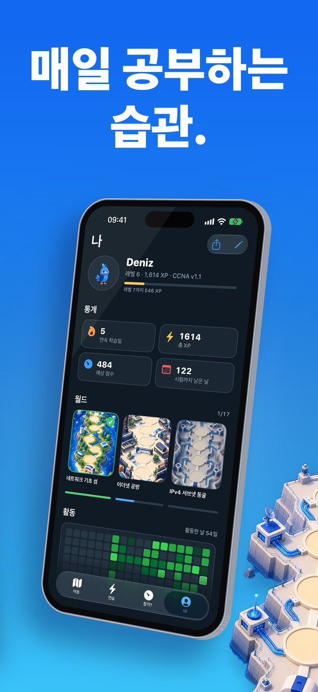
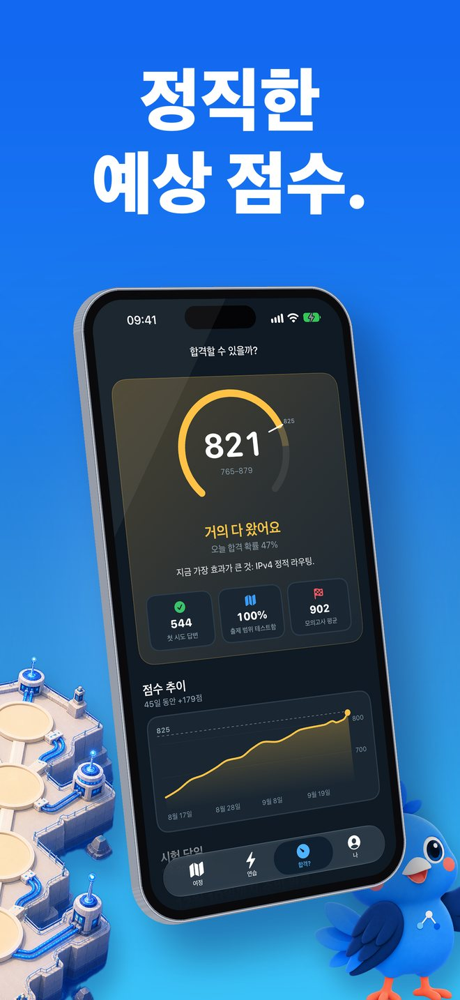

Linkwing은 어떤 앱인가요?
네트워크를 하나도 몰라도 괜찮아요. Linkwing은 Kavi와 함께 일러스트 지도를 날며 처음부터 배우고, 끝에는 CCNA 200-301 시험 준비까지 이어지는 게임형 학습 앱이에요.
스크린샷


이런 분께 추천해요
- 네트워크가 뭔지 처음 배우는 입문자
- IT 분야로 진로를 바꾸려는 분
- 전산·IT 전공 학생
- CCNA 시험을 준비하는 수험생
처음부터 시작해요
- 짧은 레슨 17개, 월드 2개로 시작하는 입문 코스: 네트워크란 무엇인지, 스위치, 라우터, 방화벽, IP·MAC 주소, 와이파이, VLAN까지
- 어려운 용어 대신 일상 속 비유와 그림으로 설명해요
- 강조된 단어를 탭하면 쉬운 뜻이 바로 나와요
- 레슨 끝의 쉬운 퀴즈는 틀린 보기까지 이유를 설명해 줘요
- 완전 처음이면 첫 레슨부터, 아니면 5문제 적응형 점검으로 이미 아는 부분은 건너뛰어요
게임처럼 이어가요
- 일러스트 지도 위를 Kavi가 정류장마다 날아가요
- 하루 두어 분이면 충분한 짧은 세션, 연속 학습, 일일 퀘스트, 배지
- 위젯으로 오늘의 문제를 확인하고, 알림은 원할 때만 켜요
시험 준비는 솔직하게
- 직접 만든 오리지널 문제 1,100개 이상: exhibit, 2개 선택, 순서 배열, 짝 맞추기, 계산 문제
- 플래시카드 900개 이상 (간격 반복 학습)
- 실제 IOS 명령어를 입력하는 명령어 랩 75개 (약어도 돼요)
- 서브네팅 짐: 끝없이 생성되는 드릴로 서브넷 계산을 몸에 익혀요
- 시험 출제 비중을 반영한 시간제 모의고사
- CCNA 200-301 v1.1 지원, 2027년 2월 3일부터 시행되는 v2.0 대응
- 15개 시험 월드: 네트워크 기초, 이더넷, IPv4와 서브네팅, IPv6, VLAN, 스패닝 트리, 라우팅(정적, OSPF), DHCP·DNS·NAT, 보안, 무선, 자동화, 트러블슈팅
합격할 수 있을까? 탭
답을 40개 이상 풀면 예상 점수를 보여 줘요. 그전에는 점수를 지어내지 않아요. 준비된 만큼만 솔직하게 알려 드려요.
시험일 예측으로 하루 학습량 기준 언제 준비가 끝나는지, 점수가 어떻게 오르고 있는지도 확인할 수 있어요.
언어와 오프라인
- 한국어를 포함해 8개 언어 지원 (앱 안에서 언제든 변경)
- 오프라인에서도 학습 가능
- 계정 없이 바로 시작
입문 레슨은 한국어로 제공돼요. 시험 단계 레슨은 제목과 요약이 한국어이고 본문은 영어이며, 시험형 문제와 IOS 랩은 영어예요.
Linkwing Pro
Linkwing Pro는 선택형 자동 갱신 구독이에요. 무료로 시작할 수 있고, 구독 관리와 해지는 Apple 계정 설정에서 할 수 있어요.
자주 묻는 질문
Linkwing은 어떤 앱인가요?
Linkwing은 컴퓨터 네트워크를 처음부터 가르치고 Cisco CCNA 200-301 시험 준비를 돕는 iPhone 앱이에요. 월드 2개에 입문 레슨 17개, 파란 왕관앵무 Kavi가 안내하는 15개 시험 월드의 일러스트 지도, 오리지널 시험형 문제 1,136개, 플래시카드 929개, IOS 명령어 랩 75개, 서브네팅 짐, 시간제 모의고사가 들어 있어요. iOS 26 이상에서 사용할 수 있고, 개발자는 Ata Tunc Bilge예요.
Linkwing은 무료인가요?
Linkwing은 무료로 다운로드해 시작할 수 있어요. Linkwing Pro는 전체 코스를 여는 선택형 자동 갱신 구독이며, Apple 계정 설정에서 관리하거나 해지할 수 있어요.
실제 CCNA 시험 문제인가요?
아니요. Linkwing의 문제는 모두 시험 형식에 맞춰 직접 만든 오리지널 문제예요. 유출된 시험 문제나 덤프는 사용하지 않아요. 답을 외우는 게 아니라 내용을 이해하는 것이 목표예요.
CCNA v2.0도 대비할 수 있나요?
네. Linkwing은 2027년 2월 2일까지 응시하는 CCNA 200-301 v1.1과 2027년 2월 3일부터 시행되는 v2.0을 모두 지원하고, 시험 날짜에 따라 출제 범위를 골라 줘요. 자세한 내용은 Cisco 공식 시험 주제 페이지에서 확인하세요.
한국어로 쓸 수 있고, 오프라인에서도 되나요?
네. 앱 화면은 한국어를 포함한 8개 언어를 지원하고 앱 안에서 언제든 바꿀 수 있어요. 입문 레슨 17개는 그림 설명과 탭하면 뜻이 나오는 용어 60개까지 모두 한국어로 번역되어 있어요. 시험 단계 레슨은 제목과 요약이 한국어이고 본문은 영어예요. 시험형 문제와 IOS 랩은 영어예요. CCNA 시험이 영어와 일본어로 제공되기 때문이에요. 계정 없이 오프라인에서도 학습할 수 있어요.